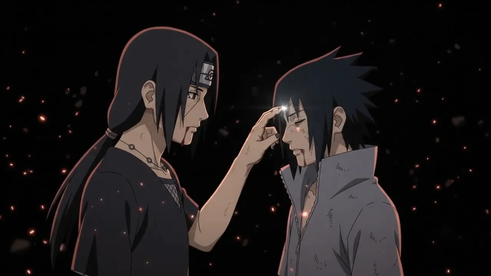
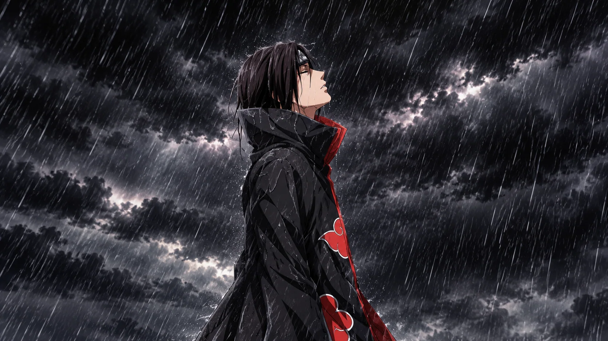
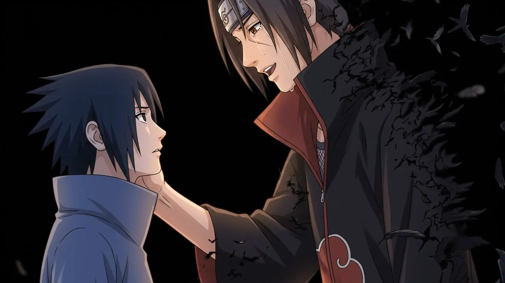
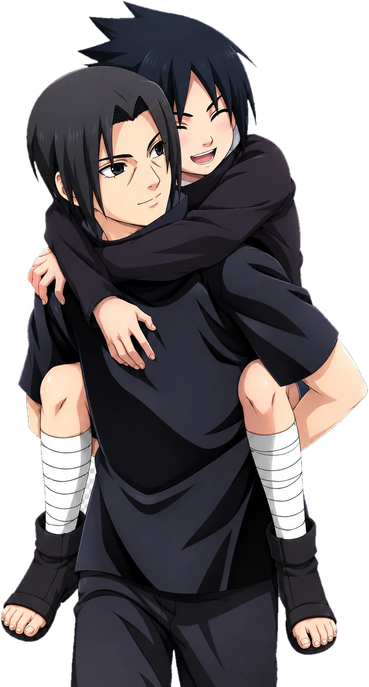

うちは兄弟 · THE UCHIHA BROTHERS
兄の手 A brother's hand.
Two fingers. A forehead. Everything he never got to say.
許せ、サスケ
Forgive me, Sasuke… this is the last time.

02 — 雨 / RAIN
He carried it alone.
Every lie. Every wound. Every night under a sky like this one — all of it so that one small boy could grow up hating him, and live.

03 — 誇 / PRAISE
- 強くなったなYou've grown strong.
- お前は俺の誇りだYou are my pride.
- 俺を許さなくていいYou never have to forgive me.
- お前をずっと愛しているI will love you. Always.
- 烏And then — only feathers.
04 — 絆 / BOND
Before all of it, there was this.
A walk home from the training ground. A sprained ankle that wasn't really sprained. A little brother who only wanted to be carried a while longer.
- 兄Ani — older brother
- 弟Otōto — younger brother
- 絆Kizuna — the bond

終 — LET IT GO
SORRY, SASUKE. MAYBE NEXT TIME. また今度だ 許せ サスケ NO MATTER WHAT YOU DO FROM HERE ON, I WILL LOVE YOU ALWAYS.